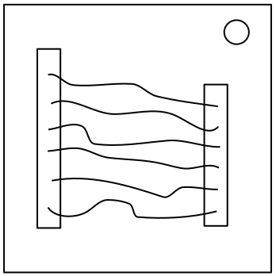
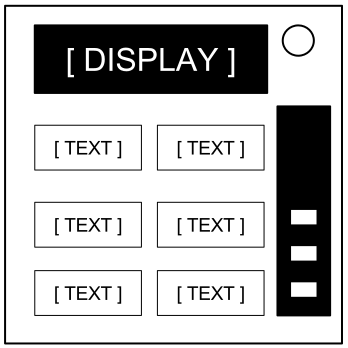
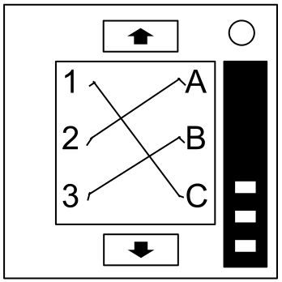

Keep Talking and Nobody Explodes v. 1
Introduction
Welcome to the dangerous and challenging world of bomb defusing.
当マニュアルをよくご確認下さい; 貴方はエキスパートです。
当マニュアルには爆弾の最も狡猾な部分を含む全てが記載されています。
少しでも見落とすと全てが破滅してしまいます！
Keep Talking and Nobody Explodes v. 1
Defusing Bombs
爆弾解除方法
爆弾はカウントダウンタイマーが0:00に達した際、又は失敗回数が超過した際に爆発します。爆弾はタイマーが切れる前に全てのモジュールを解除することにより無効化されます。
爆弾の例
 前面 |  側面 |
モジュール
本体には最大11個のモジュールが付属しています。各モジュールは独立しており任意の順序で解除できます。
1章にて各モジュールの解除方法を説明します。2章では特殊な「Needyモジュール」の対処法を説明します。
ストライク
ストライクインジケータ

解除者が対処を誤った場合、カウントダウンタイマーの上部にあるストライクインジケータにて失敗の回数が記録されます。ストライクインジケータのある爆弾については3回目の失敗が記録された時に爆弾は爆発します。また失敗が記録された以降はカウントダウンタイマーがより早く動作します。
カウントダウンタイマー上部にインジケータがない場合については爆弾は初回の失敗時に爆発します。
Gathering Information
解除方法の中にはシリアルナンバー等の爆弾の固有情報を要する項目があります。各情報は筐体の側面にてご確認下さい。巻末の付録A,B,Cにおいて解除方法に使用する各情報を記載しています。
Keep Talking and Nobody Explodes v. 1
Section 1: Modules

Section 1: Modules
モジュールには右上部にLEDが接続されています。
モジュールは解除されるとLEDが緑色に発光します。
爆弾を無効化するためには
全てのモジュールを解除する必要があります。
Keep Talking and Nobody Explodes v. 1
Wires

On the Subject of Wires
Wires are the lifeblood of electronics! Wait, no, electricity is the lifeblood. Wires are more like the arteries. The veins? No matter…
- ワイヤーモジュールには3～6本のワイヤーが接続されています。
- 解除の際には正しいワイヤーを1本だけ切断して下さい。
- ワイヤーの順序については最も上にあるワイヤーから昇順に数えます。
- 訳注：各本数における指示は先に記載されている指示を優先します。
| 3 wires: 赤色のワイヤーがない場合、二番目のワイヤーを切断してください。 または最後のワイヤーが白い場合、最後のワイヤーを切断してください。 または青色のワイヤーが二本以上ある場合、最後の青色のワイヤーを切断してください。 それ以外の場合は最後のワイヤーを切断してください。 |
| 4 wires: 赤色のワイヤーが二本以上ありシリアルナンバーの末尾が奇数の場合、最後の赤色のワイヤーを切断してください。 または最後のワイヤーが黄色であり赤色のワイヤーがない場合、最初のワイヤーを切断してください。 または青色のワイヤーが一本だけある場合、最初のワイヤーを切断してください。 または黄色のワイヤーが二本以上ある場合、最後のワイヤーを切断してください。 それ以外の場合は二番目のワイヤーを切断してください。 |
| 5 wires: 最後のワイヤーが黒色でシリアルナンバーの末尾が奇数の場合、四番目のワイヤーを切断してください。 または赤色のワイヤーが一本だけで黄色のワイヤーが二本以上ある場合、最初のワイヤーを切断してください。 または黒色のワイヤーがない場合、二番目のワイヤーを切断してください。 それ以外の場合は最初のワイヤーを切断してください。 |
| 6 wires: 黄色のワイヤーがなくシリアルナンバーの末尾が奇数の場合、三番目のワイヤーを切断してください。 または黄色のワイヤーが一本だけで白色のワイヤーが二本以上ある場合、四番目のワイヤーを切断してください。 または赤色のワイヤーがない場合、最後のワイヤーを切断してください。 それ以外の場合は四番目のワイヤーを切断してください。 |
Keep Talking and Nobody Explodes v. 1
The Button

On the Subject of The Button
You might think that a button telling you to press it is pretty straightforward. That’s the kind of thinking that gets people exploded.
各インジケータの識別には付録Aをご利用下さい。
各バッテリーの識別には付録Bをご利用下さい。
記載されている順に下記の指示に従って下さい。:
- ボタンが青色で"Abort"と印字されている場合、ボタンを押下したまま"Releasing a Held Button"の指示に従って下さい。
- 爆弾に二個以上のバッテリーが接続されていてボタンに"Detonate"と印字されている場合、ボタンを押下し即座に離して下さい。
- ボタンが白色でCARと表記されたインジケータが発光している場合、ボタンを押下したまま"Releasing a Held Button"の指示に従って下さい。
- 爆弾に三個以上のバッテリーが接続されていてFRKと表記されたインジケータが発光している場合、ボタンを押下し即座に離して下さい。
- ボタンが黄色の場合、ボタンを押下したまま"Releasing a Held Button"の指示に従って下さい。
- ボタンが赤色で"Hold"と印字されている場合、ボタンを押下し即座に離して下さい。
- 上記のどの条件にも当てはまらない場合、ボタンを押下したまま"Releasing a Held Button"の指示に従って下さい。
Releasing a Held Button
ボタンを押下するとモジュール右部の帯ランプが発色します。ランプの色に応じて適切な時点でボタンを離して下さい。
- 青: カウントダウンタイマーのいずれかの位置に4が表示されている時
- 白: カウントダウンタイマーのいずれかの位置に1が表示されている時
- 黄: カウントダウンタイマーのいずれかの位置に5が表示されている時
- その他: カウントダウンタイマーのいずれかの位置に1が表示されている時
Keep Talking and Nobody Explodes v. 1
Keypads

On the Subject of Keypads
I'm not sure what these symbols are, but I suspect they have something to do with occult.
- 下記の表のうちキーパッドに印字されている4つのシンボル全てが含まれている列が1列だけあります。
- 印字されているシンボルが該当列の上から下の順にキーパッドの4つのボタンを押下して下さい。
 |  |  |  |  | | |||||
 | |  |  |  | | |||||
 |  |  | |  | ||||||
 |  |  | ||||||||
 |  | | | |||||||
 | | |  |  |  | |||||
| | | |  |  |
Keep Talking and Nobody Explodes v. 1
Simon Says

On the Subject of Simon Says
This is like one of those toys you played with as a kid where you have to match the pattern that appears, except this one is a knockoff that was probably purchased at a dollar store.
- 4色のボタンのうち1つが点滅します。
- 下記の適切な表を用いて対応する色のボタンを押下します。
- 前に点滅したボタンが再び点滅し、その後点滅するボタンが1つ増えます。表を参考に上記の手順を繰り返して下さい。
- モジュールが解除されるまでの間は入力の成功ごとに点滅するボタンの数が1つずつ増えます。
シリアルナンバーに母音が含まれる場合:
| Red Flash | Blue Flash | Green Flash | Yellow Flash | ||
|---|---|---|---|---|---|
| 押下するボタン: | 0 ストライク | Blue | Red | Yellow | Green | 1 ストライク | Yellow | Green | Blue | Red | 2 ストライク | Green | Red | Yellow | Blue |
シリアルナンバーに母音が含まれない場合:
| Red Flash | Blue Flash | Green Flash | Yellow Flash | ||
|---|---|---|---|---|---|
| 押下するボタン: | 0 ストライク | Blue | Yellow | Green | Red | 1 ストライク | Red | Blue | Yellow | Green | 2 ストライク | Yellow | Green | Blue | Red |
Keep Talking and Nobody Explodes v. 1
Who's on First

On the Subject of Who’s on First
This contraption is like something out of a sketch comedy routine, which might be funny if it wasn't connected to a bomb. I’ll keep this brief, as words only complicate matters.
- ディスプレイの表示を読み取り、step 1に従って読み取るボタンのラベルを判別して下さい。
- ボタンのラベルを読み取り、step 2に従って押下するボタンを判別して下さい。
- モジュールが解除されるまで上記の手順を繰り返して下さい。
Step 1:
ディスプレイの表示を元に当該のボタンのラベルを読み取り、step 2に進む:
|
|
|
|
|
| ||||||||||||||||||||||||||||||||||||||||||||||||
|
|
|
|
| |||||||||||||||||||||||||||||||||||||||||||||||||
|
|
|
|
|
| ||||||||||||||||||||||||||||||||||||||||||||||||
|
|
|
|
|
| ||||||||||||||||||||||||||||||||||||||||||||||||
|
|
|
| ||||||||||||||||||||||||||||||||||||||||||||||||||
Keep Talking and Nobody Explodes v. 1
Who's on First
Step 2:
step 1のラベルを元に、対応するリストに最初に現れるボタンを押下する:
| "READY": | YES, OKAY, WHAT, MIDDLE, LEFT, PRESS, RIGHT, BLANK, READY, NO, FIRST, UHHH, NOTHING, WAIT |
|---|---|
| "FIRST": | LEFT, OKAY, YES, MIDDLE, NO, RIGHT, NOTHING, UHHH, WAIT, READY, BLANK, WHAT, PRESS, FIRST |
| "NO": | BLANK, UHHH, WAIT, FIRST, WHAT, READY, RIGHT, YES, NOTHING, LEFT, PRESS, OKAY, NO, MIDDLE |
| "BLANK": | WAIT, RIGHT, OKAY, MIDDLE, BLANK, PRESS, READY, NOTHING, NO, WHAT, LEFT, UHHH, YES, FIRST |
| "NOTHING": | UHHH, RIGHT, OKAY, MIDDLE, YES, BLANK, NO, PRESS, LEFT, WHAT, WAIT, FIRST, NOTHING, READY |
| "YES": | OKAY, RIGHT, UHHH, MIDDLE, FIRST, WHAT, PRESS, READY, NOTHING, YES, LEFT, BLANK, NO, WAIT |
| "WHAT": | UHHH, WHAT, LEFT, NOTHING, READY, BLANK, MIDDLE, NO, OKAY, FIRST, WAIT, YES, PRESS, RIGHT |
| "UHHH": | READY, NOTHING, LEFT, WHAT, OKAY, YES, RIGHT, NO, PRESS, BLANK, UHHH, MIDDLE, WAIT, FIRST |
| "LEFT": | RIGHT, LEFT, FIRST, NO, MIDDLE, YES, BLANK, WHAT, UHHH, WAIT, PRESS, READY, OKAY, NOTHING |
| "RIGHT": | YES, NOTHING, READY, PRESS, NO, WAIT, WHAT, RIGHT, MIDDLE, LEFT, UHHH, BLANK, OKAY, FIRST |
| "MIDDLE": | BLANK, READY, OKAY, WHAT, NOTHING, PRESS, NO, WAIT, LEFT, MIDDLE, RIGHT, FIRST, UHHH, YES |
| "OKAY": | MIDDLE, NO, FIRST, YES, UHHH, NOTHING, WAIT, OKAY, LEFT, READY, BLANK, PRESS, WHAT, RIGHT |
| "WAIT": | UHHH, NO, BLANK, OKAY, YES, LEFT, FIRST, PRESS, WHAT, WAIT, NOTHING, READY, RIGHT, MIDDLE |
| "PRESS": | RIGHT, MIDDLE, YES, READY, PRESS, OKAY, NOTHING, UHHH, BLANK, LEFT, FIRST, WHAT, NO, WAIT |
| "YOU": | SURE, YOU ARE, YOUR, YOU'RE, NEXT, UH HUH, UR, HOLD, WHAT?, YOU, UH UH, LIKE, DONE, U |
| "YOU ARE": | YOUR, NEXT, LIKE, UH HUH, WHAT?, DONE, UH UH, HOLD, YOU, U, YOU'RE, SURE, UR, YOU ARE |
| "YOUR": | UH UH, YOU ARE, UH HUH, YOUR, NEXT, UR, SURE, U, YOU'RE, YOU, WHAT?, HOLD, LIKE, DONE |
| "YOU'RE": | YOU, YOU'RE, UR, NEXT, UH UH, YOU ARE, U, YOUR, WHAT?, UH HUH, SURE, DONE, LIKE, HOLD |
| "UR": | DONE, U, UR, UH HUH, WHAT?, SURE, YOUR, HOLD, YOU'RE, LIKE, NEXT, UH UH, YOU ARE, YOU |
| "U": | UH HUH, SURE, NEXT, WHAT?, YOU'RE, UR, UH UH, DONE, U, YOU, LIKE, HOLD, YOU ARE, YOUR |
| "UH HUH": | UH HUH, YOUR, YOU ARE, YOU, DONE, HOLD, UH UH, NEXT, SURE, LIKE, YOU'RE, UR, U, WHAT? |
| "UH UH": | UR, U, YOU ARE, YOU'RE, NEXT, UH UH, DONE, YOU, UH HUH, LIKE, YOUR, SURE, HOLD, WHAT? |
| "WHAT?": | YOU, HOLD, YOU'RE, YOUR, U, DONE, UH UH, LIKE, YOU ARE, UH HUH, UR, NEXT, WHAT?, SURE |
| "DONE": | SURE, UH HUH, NEXT, WHAT?, YOUR, UR, YOU'RE, HOLD, LIKE, YOU, U, YOU ARE, UH UH, DONE |
| "NEXT": | WHAT?, UH HUH, UH UH, YOUR, HOLD, SURE, NEXT, LIKE, DONE, YOU ARE, UR, YOU'RE, U, YOU |
| "HOLD": | YOU ARE, U, DONE, UH UH, YOU, UR, SURE, WHAT?, YOU'RE, NEXT, HOLD, UH HUH, YOUR, LIKE |
| "SURE": | YOU ARE, DONE, LIKE, YOU'RE, YOU, HOLD, UH HUH, UR, SURE, U, WHAT?, NEXT, YOUR, UH UH |
| "LIKE": | YOU'RE, NEXT, U, UR, HOLD, DONE, UH UH, WHAT?, UH HUH, YOU, LIKE, SURE, YOU ARE, YOUR |
Keep Talking and Nobody Explodes v. 1
Memory

On the Subject of Memory
Memory is a fragile thing but so is everything else when a bomb goes off, so pay attention!
- 各ステージ毎の指示に従い正しいボタンを押下しモジュールを次のステージに進めて下さい。全てのステージを完了するとモジュールが解除されます。
- 誤ったボタンを押下するとモジュールはステージ1に戻ります。
- ボタンの位置については左から右の順に数えます。
Stage 1:
ディスプレイの表示が1の場合、二番目のボタンを押下する。
ディスプレイの表示が2の場合、二番目のボタンを押下する。
ディスプレイの表示が3の場合、三番目のボタンを押下する。
ディスプレイの表示が4の場合、四番目のボタンを押下する。
Stage 2:
ディスプレイの表示が1の場合、"4"と印字されているボタンを押下する。
ディスプレイの表示が2の場合、stage 1で押下したボタンと同じ位置のボタンを押下する。
ディスプレイの表示が3の場合、一番目のボタンを押下する
ディスプレイの表示が4の場合、stage 1で押下したボタンと同じ位置のボタンを押下する。
Stage 3:
ディスプレイの表示が1の場合、stage 2で押下したボタンと同じ印字のボタンを押下する。
ディスプレイの表示が2の場合、stage 1で押下したボタンと同じ印字のボタンを押下する。
ディスプレイの表示が3の場合、三番目のボタンを押下する。
ディスプレイの表示が4の場合、"4"と印字されているボタンを押下する。
Stage 4:
ディスプレイの表示が1の場合、stage 1で押下したボタンと同じ位置のボタンを押下する。
ディスプレイの表示が2の場合、一番目のボタンを押下する。
ディスプレイの表示が3の場合、stage 2で押下したボタンと同じ位置のボタンを押下する。
ディスプレイの表示が4の場合、stage 2で押下したボタンと同じ位置のボタンを押下する。
Stage 5:
ディスプレイの表示が1の場合、stage 1で押下したボタンと同じ印字のボタンを押下する。
ディスプレイの表示が2の場合、stage 2で押下したボタンと同じ印字のボタンを押下する。
ディスプレイの表示が3の場合、stage 4で押下したボタンと同じ印字のボタンを押下する。
ディスプレイの表示が4の場合、stage 3で押下したボタンと同じ印字のボタンを押下する。
Keep Talking and Nobody Explodes v. 1
Morse Code
On the Subject of Morse Code
An antiquated form of naval communication? What next? At least it's genuine Morse Code, so pay attention and you might just learn something.
- モールス信号の図を参考にライトの点滅から信号を解読し、表から単語を特定して下さい。
- 信号は一定の間隔を開けて繰り返されます。
- 特定した単語に対応する周波数を設定して転送(TX)ボタンを押下して下さい。
| If the word is: | Respond at frequency: |
|---|---|
| shell | 3.505 MHz |
| halls | 3.515 MHz |
| slick | 3.522 MHz |
| trick | 3.532 MHz |
| boxes | 3.535 MHz |
| leaks | 3.542 MHz |
| strobe | 3.545 MHz |
| bistro | 3.552 MHz |
| flick | 3.555 MHz |
| bombs | 3.565 MHz |
| break | 3.572 MHz |
| brick | 3.575 MHz |
| steak | 3.582 MHz |
| sting | 3.592 MHz |
| vector | 3.595 MHz |
| beats | 3.600 MHz |
Keep Talking and Nobody Explodes v. 1
Complicated Wires

On the Subject of Complicated Wires
These wires aren't like the others. Some have stripes! That makes them completely different. The good news is that we've found a concise set of instructions on what to do about it! Maybe too concise...
- 各ワイヤーを確認する: ワイヤー上部にはLEDがあり、下部には"★"のシンボルを記す欄があります。
- 各ワイヤー毎にワイヤー/LED/シンボルの組み合わせから下記のベン図を用いてワイヤーを切断するかどうかを判断して下さい。
- ワイヤーは複数の色によるストライプである場合があります。
| 文字 | 指示 |
|---|---|
| C | ワイヤーを切断する |
| D | ワイヤーを切断しない |
| S | シリアルナンバー末尾が偶数の場合は切断する |
| P | 爆弾にパラレルポートがある場合は切断する |
| B | 爆弾にバッテリーが2つ以上ある場合は切断する |
各バッテリーの識別には付録Bをご利用下さい。
各ポートの識別には付録Cをご利用下さい。
Keep Talking and Nobody Explodes v. 1
Wire Sequences

On the Subject of Wire Sequences
It's hard to say how this mechanism works. The engineering is pretty impressive, but there must have been an easier way to manage nine wires.
- このモジュールはワイヤーの配線された複数のパネルから構成されています。但し同時に目視できるパネルは常に1枚のみです。下ボタンによって次のパネルに切り替え、上ボタンによって前のパネルに切り替えることができます。
- 現在のパネルにあるワイヤーを全て正しく対処するまでは次のパネルに切り替えてはいけません。
- 下記の表の指示に従いワイヤーを切断して下さい。ワイヤーの出現回数は全てのパネルにおいて累積します。
| 赤色ワイヤー出現回数 | |
|---|---|
| Wire Occurrence | 接続時に切断: |
| First red occurrence | C |
| Second red occurrence | B |
| Third red occurrence | A |
| Fourth red occurrence | A or C |
| Fifth red occurrence | B |
| Sixth red occurrence | A or C |
| Seventh red occurrence | A, B or C |
| Eighth red occurrence | A or B |
| Ninth red occurrence | B |
| 青色ワイヤー出現回数 | |
|---|---|
| Wire Occurrence | 接続時に切断: |
| First blue occurrence | B |
| Second blue occurrence | A or C |
| Third blue occurrence | B |
| Fourth blue occurrence | A |
| Fifth blue occurrence | B |
| Sixth blue occurrence | B or C |
| Seventh blue occurrence | C |
| Eighth blue occurrence | A or C |
| Ninth blue occurrence | A |
| 黒色ワイヤー出現回数 | |
|---|---|
| Wire Occurrence | 接続時に切断: |
| First black occurrence | A, B or C |
| Second black occurrence | A or C |
| Third black occurrence | B |
| Fourth black occurrence | A or C |
| Fifth black occurrence | B |
| Sixth black occurrence | B or C |
| Seventh black occurrence | A or B |
| Eighth black occurrence | C |
| Ninth black occurrence | C |
Keep Talking and Nobody Explodes v. 1
Mazes

On the Subject of Mazes
This seems to be some kind of maze, probably stolen off of a restaurant placemat.
- 円のマークを元に一致する迷路図を特定して下さい。
- 方向ボタンを用いて白い点を赤い三角形へ誘導して下さい
- 警告: 迷路内の線をまたいではいけません。線は爆弾には表示されません。


Keep Talking and Nobody Explodes v. 1
Passwords

On the Subject of Passwords
Fortunately this password doesn't seem to meet standard government security requirements: 22 characters, mixed case, numbers in random order without any palindromes above length 3.
- 各文字の上下にあるボタンを用いて各位置の文字を切り替えることができます。
- 文字の組み合わせのうち下記のパスワード表に一致する組み合わせが一組だけあります。
- 正しい単語を設定してsubmitボタンを押下して下さい。
| about | after | again | below | could |
| every | first | found | great | house |
| large | learn | never | other | place |
| plant | point | right | small | sound |
| spell | still | study | their | there |
| these | thing | think | three | water |
| where | which | world | would | write |
Keep Talking and Nobody Explodes v. 1
Section 2: Needy Modules

Section 2: Needy Modules
Needyモジュールは解除することができません。また障害が発生する度に一時停止の処置を施す必要があります。
Needyモジュールには上部中央に小型のデジタルタイマーが接続されています。 爆弾の処理中にこのモジュールが起動することがあります。その際にはタイマーが切れる前に定常状態への処置を施す必要があります。
要確認: needyモジュールは常に再起動する可能性があります。
Keep Talking and Nobody Explodes v. 1
Venting Gas

On the Subject of Venting Gas
Computer hacking is hard work! Well, it usually is. This job could probably be performed by a simple drinking bird pressing the same key over and over again.
- "Y"（Yes）ボタンと"N"（No）ボタンを用いてプロンプトの質問に応答して下さい。
Keep Talking and Nobody Explodes v. 1
Capacitor Discharge

On the Subject of Capacitor Discharge
I'm going to guess that this is just meant to occupy your attention, because otherwise this is some shoddy electronics work.
- 過負荷状態になる前にレバーを下げ続けてコンデンサーを放電して下さい。
Keep Talking and Nobody Explodes v. 1
Knobs

On the Subject of Knobs
Needlessly complicated and endlessly needy. Imagine if such expertise were used to make something other than diabolical puzzles.
- ノブは四方向に切り替える事ができます。
- タイマーが0になる時にノブが正しい位置に設定されている必要があります。
- 正しい位置は12個のLEDの発光パターンにより確認できます。
- ノブの位置は"UP"の印字から相対的に決定されます。"UP"の位置は回転している場合があります。
LED Configurations
Up Position:
| X | X | X | |||
| X | X | X | X | X |
| X | X | X | |||
| X | X | X | X |
Down Position:
| X | X | X | |||
| X | X | X | X | X |
| X | X | X | |||
| X | X |
Left Position:
| X | |||||
| X | X | X | X |
| X | |||||
| X | X |
Right Position:
| X | X | X | X | X | |
| X | X | X | X |
| X | X | X | |||
| X | X | X | X |
X = Lit LED
Keep Talking and Nobody Explodes v. 1
Appendix A
Appendix A: Indicator Identification Reference
ラベルインジケータは筐体の側面に配置されています。

Common Indicators
- SND
- CLR
- CAR
- IND
- FRQ
- SIG
- NSA
- MSA
- TRN
- BOB
- FRK
Keep Talking and Nobody Explodes v. 1
Appendix B
Appendix B: Battery Identification Reference
共通規格バッテリーは筐体側面にバッテリーケースと共に配置されています。
| Battery | Type |
|---|---|
 | AA |
 | D |
Keep Talking and Nobody Explodes v. 1
Appendix C
Appendix C: Port Identification Reference
デジタルポート及びアナログポートは筐体の側面に配置されています。
| Port | Name |
|---|---|
 | DVI-D |
 | Parallel |
| PS/2 | |
 | RJ-45 |
 | Serial |
| Stereo RCA |